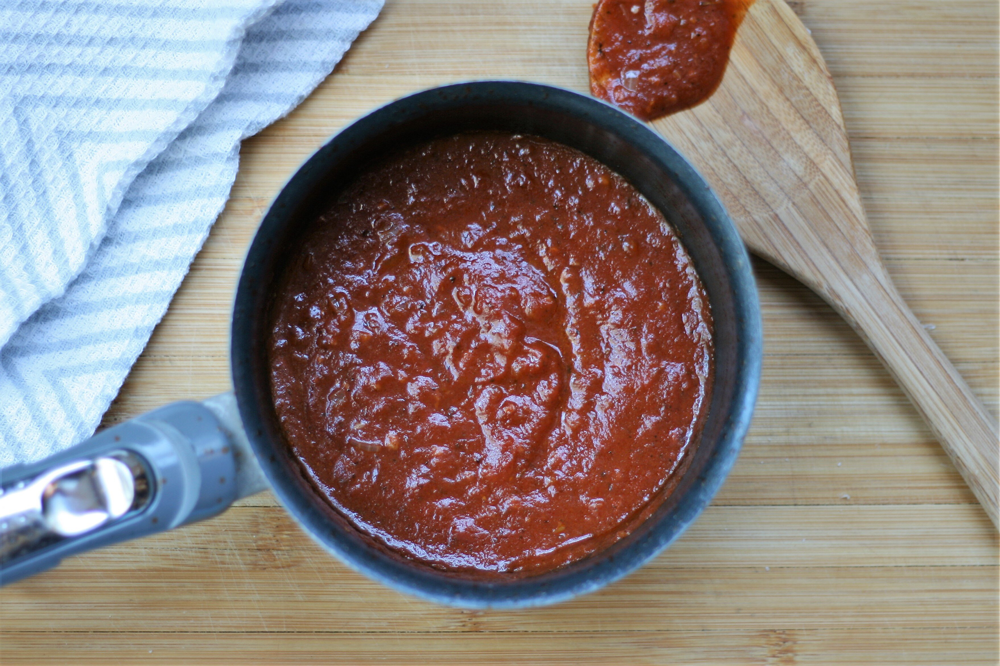

Home
Pizza Sauce

Homemade Red Pizza Sauce
Ingredients
- 2 teaspoons olive oil
- 1/4 cup onion
- 1 clove garlic
- 1 teaspoon Italian seasoning
- 1/4 teaspoon crushed red pepper flakes
- 1 splash red wine
- 1 (8 ounce) can tomato sauce
Steps
- Heat olive oil in a small pot over medium-high heat. Saute onion, garlic, Italian seasoning, and red pepper flakes in the hot oil until onions start to soften, about 5 minutes. Add a splash of red wine; stir for a few seconds. Add tomato sauce and stir.
- Reduce heat to low and let simmer for 10 minutes.